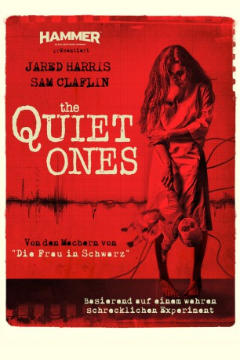
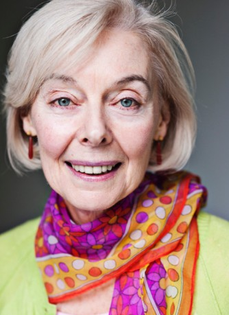

#8817 The Quiet Ones
 
 IMDB-Wertung: 5.1 / 10
IMDB-Wertung: 5.1 / 10  Metascore: 0
Metascore: 0 
Der unorthodoxe aber sehr charismatische Uni-Professor Coupland nutzt geheimnisvolle und kontroverse Methoden, um mit seinen besten Studenten ein gefährliches Experiment durchzuführen: Die Erschaffung eines echten Poltergeistes. Seiner Theorie nach basieren paranormale Aktivitäten auf der Grundlage negativer menschlicher Energie. Deshalb führen die gewissenlosen Wissenschaftler eine Reihe von Experimenten an der jungen Patientin Jane Harper durch, um ihren Verstand zu brechen und sie in den Wahnsinn zu treiben. Als daraufhin tatsächlich schockierende Ereignisse stattfinden, nimmt der Schrecken seinen Lauf. Die überforderte Gruppe muss feststellen, dass sie eine Macht heraufbeschworen hat, die furchteinflößender und böser ist, als sie es sich jemals vorstellen konnte...
Jahr: 2014
Dauer: 98 Minuten
FSK: 16
Land: USA Studio: LionsgateTonspuren: DTS - ,
Untertitel: Deutsch,
Auflösung: 1080p (1920x1080) Größe: 6789 MB
Genre: Horror
Regisseur: John Pogue
Drehbuch: Craig Rosenberg
Soundtrack: Lucas Vidal
Darsteller:
 Jared Harris als Professor Joseph Coupland
Jared Harris als Professor Joseph Coupland Sam Claflin als Brian McNeil
Sam Claflin als Brian McNeil- Erin Richards als Krissi Dalton
- Rory Fleck Byrne als Harry Abrams
 Olivia Cooke als Jane Harper
Olivia Cooke als Jane Harper- Laurie Calvert als Phillip
- Aldo Maland als David Q
- Max Pirkis als David Q (older)
 Richard Cunningham als Provost
Richard Cunningham als Provost-  Eileen Nicholas als Angry Neighbor
- Rebecca Scott als Student #1
- Aretha Ayeh als Student #2
- Harman Singh als Student #4
- Tracy Ray als David Q's Mother
- Max Macintosh als Student #3
- Ben Holden als Doctor
- Dean Mitchell als Asylum Attendant (uncredited)
- Nick Owenford als Professor (uncredited)
Datei: X:\2014(N-Z)\Quiet Ones, The (2014, FSK16, 1920x1080).mkv seit 30.04.2018
Festplatte: HD 2013(I-Z)-2014(A-Z)
 Es gibt insgesamt 163 Filme in der Gruppe '2014(N-Z)'
Es gibt insgesamt 163 Filme in der Gruppe '2014(N-Z)'